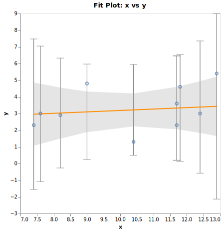

LinearRegression.jl Documentation
LinearRegression.jl implements linear regression using the least-squares algorithm (relying on the sweep operator). This package is in the alpha stage. Hence it is likely that some bugs exist. Furthermore, the API might change in future versions.
The usage aims to be straightforward, a call to regress to build a linear regression model, and a call to predict_in_sample to predict data using the built linear regression model. When predicting on data not present during the regression, use the predict_out_of_sample function as this does not require a response value (consequently, statistics that need a response, as the residuals, are not available.)
The regress call will compute some statistics about the fitted model in addition to the coefficients. The statistics computed depend on the value of the req_stats argument. The prediction functions compute predicted values together with some statistics. Like for the regress calls, the statistics computed depend on the value of the req_stats argument.
Statistics related to the regression (the fitting)
Fitting the model generates some statistics dependent on the req_stats argument of the regress function.
- $n$, $p$,
"coefs"and"see"are always computed "mse","sst","rmse","aic","sigma","t_statistic","vif","r2","adjr2","stderror","t_values","p_values","ci", are computed upon request.- some diagnostics can be requested as well. Here is the full list as Symbols
[:diag_normality, :diag_ks, :diag_ad, :diag_jb, :diag_heteroskedasticity, :diag_white, :diag_bp ],"diag_normality"is a shortcut for[:diag_ks, :diag_ad, :diag_jb]and:diag_heteroskedasticityis a shortcut for[:diag_white, :diag_bp].
- some diagnostics can be requested as well. Here is the full list as Symbols
- "default", includes the mandatory stats, and some of the optional statistics here as Symbols:
[:coefs, :sse, :mse, :sst, :rmse, :sigma, :t_statistic, :r2, :adjr2, :stderror, :t_values, :p_values, :ci] "all"includes all availble statistics"none"include only the mandatory statistics
The meaning for these statistics is given below.
Number of observations and variables
The number of observations $n$ used to fit the model.
The number of independent variables $p$ used in the model.
Total Sum of Squares
The Total Sum of Squares (SST) is calculated but not presented to the user. In case of model with intercept the SST is computed with the following:
\[\mathrm{SST}=\sum_{i=1}^{n}\left(y_{i}-\bar{y}\right)^2\]
And when there is no intercept with the following:
\[\mathrm{SST}=\sum_{i=1}^{n} y_{i}^2\]
Error Sum of Squares
The Error Sum of Squares (or SSE) also known as Residual Sum of Square (RSS). This package uses the sweep operator (Goodnight, J. (1979). "A Tutorial on the SWEEP Operator." The American Statistician.) to compute the SSE.
Mean Squared Error
The Mean Squared Error (MSE) is calculated as
\[\mathrm{MSE} = \displaystyle{\frac{{\mathrm{SSE}}}{{n - p}}}\]
The Root Mean Squared Error (RMSE) is calculated as
\[\mathrm{RMSE} = \sqrt{\mathrm{MSE}}\]
The MSE is the estimator of σ̂² unless at least one robust covariance estimator is requested.
R² and Adjusted R²
The R² (R2 or R-squared) see (https://en.wikipedia.org/wiki/Coefficientofdetermination) is calculated with the following formula:
\[\mathrm{R}^2 = 1 - \displaystyle{\frac{{\mathrm{SSE}}}{{\mathrm{SST}}}}\]
The Adjusted R² (ADJR2) is computed with the following formulas:
when it is a model with an intercept:
\[\mathrm{ADJR}^2 = 1 - \displaystyle \frac{(n-1)(1-\mathrm{R}^2)}{n-p}\]
And when there is no intercept:
\[\mathrm{ADJR}^2 = 1 - \displaystyle \frac{(n)(1-\mathrm{R}^2)}{n-p}\]
Akaike information criterion
The Akaike information criterion is calculated with the Linear Regression specific formula:
\[\mathrm{AIC} = \displaystyle n \ln \left( \frac{\mathrm{SSE}}{n} \right) + 2p\]
t_statistic and confidence interval
The t_statistic is computed by using the inverse cumulative t_distribution (with quantile()) with parameter ($n - p$) at $1 - \frac{α}{2}$.
The standard errors of the coefficients are calculated by multiplying the Sigma (estimated by the MSE) with the pseudo inverse matrix (resulting from the sweep operator), out of which the square root of the diagonal elements are extracted.
The t-values are calculated as the coefficients divided by their standard deviation.
The upper bound of the confidence interval for each coefficient is calculated as the coeffiecent + coefficient's standard error * t_statistic.
The lower bound of the confidence interval for each coefficient is calculated as the coeffiecent - coefficient's standard error * t_statistic.
p-values
The p-values are computed using the F Distribution, the degree of freedom for each coefficent.
Variance inflation factor
Variance inflation factor (VIF) is calculated by taking the diagonal elements of the inverse of the correlation matrix formed by the independent variables.
Robust covariance estimators
Robust Covariance estimator can be requested through the cov argument of the regress function. The options are (as Symbols):
:white: Heteroscedasticity:hc0: Heteroscedasticity:hc1: Heteroscedasticity):hc2: Heteroscedasticity):hc3: Heteroscedasticity):nw: HAC (Heteroskedasticity and Autocorrelation Consistent estimator)
Heteroscedasticity estimators
The user can select estimators from above list. If the user select :white as an estimator then HC3 will be selected for a small size (n <= 250) otherwise HC0 will be selected. (see "Using Heteroscedasticity Consitent Standard Errors in the Linear Regression Model" J. Scott Long and Laurie H. Ervin (1998-2000)). If another estimator is requested it is provided. A list of estimator can be requested as in for instance cov=[:hc2, hc3]. Comprehensive descriptions of the estimators and their applications shoudl in found in a text book, here only a brief description of the implementation is provided.
HC0
Having InvMat the pseudo inverse resulting from the sweep operator. And having $xe$ being the matrix of the independent variables times the residuals. Then HC0 is calculated as:
\[\textup{HC0} = \sqrt{diag(\textup{InvMat } \textup{xe}' \textup{xe} \textup{ InvMat})}\]
HC1
Having n being the number of observations and p the number of variables. Then HC1 is calculated as:
\[\textup{HC1} = \sqrt{diag(\textup{InvMat } \textup{xe}' \textup{xe} \textup{ InvMat } \frac{n}{n-p})}\]
HC2
The leverage or hat matrix is calculated as:
\[\textup{H} = \textup{X} (\textup{X'X})^{-1}\textup{X'}\]
$xe$ is scaled by $\frac{1}{1 - H}$ then
\[\textup{HC2} = \sqrt{diag(\textup{InvMat } \textup{xe}' \textup{xe} \textup{ InvMat } )}\]
HC3
$xe$ is scaled by $\frac{1}{{\left( 1 - H \right)^2}}$ then
\[\textup{HC3} = \sqrt{diag(\textup{InvMat } \textup{xe}' \textup{xe} \textup{ InvMat } )}\]
Heteroskedasticity and autocorrelation consistent estimator (HAC)
Newey-West estimator calculation is not documented yet. See reference implementation current implementation for details.
Statistics related to the prediction
Predicting values using independent variables and a model will generate predicted values and some additional statistics dependent on the value of the req_stats argument of the predict* functions. Here is a list of the available statistics: [:predicted, :residuals, :leverage, :stdp, :stdi, :stdr, :student, :rstudent, :lcli, :ucli, :lclp, :uclp, :press, :cooksd]
Predicted
The predicted value is the sum of the dependant variable(s) multiplied by the coefficients from the regression and the intercept (if the model has one). The predicted value is also known as the Y-hat.
Residuals
The residuals are here defined as the known responses variables minus the predicted values.
Leverage
The leverage for the i-th independent observation x_i when it is not a weighted regression is calculated as:
\[\mathrm{h_i} = \mathrm{x_i' (X' X)^{-1} x_i}\]
And as per below when it is a weighted regression with a vector of weights $W$ with the i-th weight being $w_i$ then the i-th leverage is calculated as such:
\[\mathrm{h_i} = \mathrm{w_i \cdot x_i' (X' W X)^{-1} x_i}\]
STDP
STDP is the standard error of the mean predicted value, and is calculated as
\[\textup{STDP} = \sqrt{\hat{\sigma}^2 h_i }\]
and for a weighted regression as:
\[\textup{STDP} = \sqrt{\hat{\sigma}^2 h_i / w_i}\]
STDI
STDI is the standard error of the individual predicted value, and is calculated as
\[\textup{STDI} = \sqrt{\hat{\sigma}^2 (1 + h_i)}\]
and for a weighted regression as:
\[\textup{STDI} = \sqrt{\hat{\sigma}^2 (1 + h_i) / w_i}\]
STDR
STDR is the standard error of the residual, and is calculated as
\[\textup{STDR} = \sqrt{\hat{\sigma}^2 (1 - h_i) }\]
and for a weighted regression as:
\[\textup{STDR} = \sqrt{\hat{\sigma}^2 (1 - h_i) / w_i}\]
Student
Student represents the standardized residuals, and is calculated by using the residuals over the standard error of the residuals.
RStudent
RStudent is the studentized residuals calculated as
\[\textup{RSTUDENT} = \sqrt{ \frac{n - p - 1}{n - p - \textup{student}^2}} \]
LCLI
LCLI is the lower bound of the prediction interval and is calculated as:
\[\textup{LCLI} = \mathrm{predicted} - ( \mathrm{t\_statistic} \cdot \mathrm{STDI} )\]
UCLI
UCLI is the upper bound of the prediction interval and is calculated as:
\[\textup{UCLI} = \mathrm{predicted} + ( \mathrm{t\_statistic} \cdot \mathrm{STDI} )\]
LCLP
LCLP is the lower bound of the predicted mean confidence interval and is calculated as:
\[\textup{LCLP} = \mathrm{predicted} - ( \mathrm{t\_statistic} \cdot \mathrm{STDP} )\]
UCLP
UCLP is the upper bound of the predicted mean confidence interval and is calculated as:
\[\textup{UCLI} = \mathrm{predicted} + ( \mathrm{t\_statistic} \cdot \mathrm{STDP} )\]
COOKSD
COOKSD is the Cook's Distance for each predicted value, and is calculated as
\[\textup{COOKSD} = \frac{1}{p} \frac{\textup{STDP}^2}{\textup{STDR}^2 \cdot \textup{student}^2}\]
PRESS
PRESS is the predicted residual error sum of squares and is calculated as
\[\textup{PRESS} = \frac{\textup{residuals}}{1 - \textup{leverage}}\]
Weighted regression
This version is the initial implementation of a weighted regression using analytical weights. Here is a minimal example illustrating its usage.
using LinearRegression, DataFrames, StatsModels
using Distributions # for the data generation with Normal() and Uniform()
using VegaLite
tw = [
2.3 7.4 0.058
3.0 7.6 0.073
2.9 8.2 0.114
4.8 9.0 0.144
1.3 10.4 0.151
3.6 11.7 0.119
2.3 11.7 0.119
4.6 11.8 0.114
3.0 12.4 0.073
5.4 12.9 0.035
6.4 14.0 0
] # data from https://blogs.sas.com/content/iml/2016/10/05/weighted-regression.html
df = DataFrame(tw, [:y,:x,:w])
lm, ps= regress(@formula(y ~ x), df, "fit", weights="w")
lmModel definition: y ~ 1 + x
Used observations: 10
Weighted regression
Model statistics:
R²: 0.0149549 Adjusted R²: -0.108176
MSE: 0.182858 RMSE: 0.427619
σ̂²: 0.182858
Confidence interval: 95%
Coefficients statistics:
Terms ╲ Stats │ Coefs Std err t Pr(>|t|) low ci high ci
──────────────┼─────────────────────────────────────────────────────────────────
(Intercept) │ 2.32824 2.55186 0.912367 0.388242 -3.55637 8.21285
x │ 0.0853571 0.244924 0.348505 0.736455 -0.479438 0.650152

General remarks
For all options and parameters they can be passed as a Vector{String} or a Vector{Symbol} or alternatively if only options is needed as a single String or Symbol. For instance "all", :all or ["R2", "VIF"] or [:r2, :vif].
Functions
LinearRegression.regress — Methodfunction regress(f::StatsModels.FormulaTerm, df::DataFrames.DataFrame, req_plots; α::Float64=0.05, req_stats=["default"],
weights::Union{Nothing,String}=nothing, remove_missing=false, cov=[:none], contrasts=nothing,
plot_args=Dict("plot_width" => 400, "loess_bw" => 0.6, "residuals_with_density" => false))
Estimate the coefficients of the regression, given a dataset and a formula. and provide the requested plot(s).
A dictionary of the generated plots indexed by the descritption of the plots.
It is possible to indicate the width of the plots, and the bandwidth of the Loess smoother.LinearRegression.regress — Methodfunction regress(f::StatsModels.FormulaTerm, df::DataFrames.DataFrame; α::Float64=0.05, req_stats=["default"], weights::Union{Nothing,String}=nothing,
remove_missing=false, cov=[:none], contrasts=nothing)
Estimate the coefficients of the regression, given a dataset and a formula.
The formula details are provided in the StatsModels package and the behaviour aims to be similar as what the Julia GLM package provides.
The data shall be provided as a DataFrame without missing data.
If remove_missing is set to true a copy of the dataframe will be made and the row with missing data will be removed.
Some robust covariance estimator(s) can be requested through the ```cov``` argument.
Default contrast is dummy coding, other contrasts can be requested through the ```contrasts``` argument.
For a weighted regression, the name of column containing the analytical weights shall be identified by the ```weights``` argument.LinearRegression.predict_in_sample — Methodpredict_in_sample(lr::linRegRes, df::DataFrames.DataFrame; α=0.05, req_stats=["none"], dropmissingvalues=true)
Using the estimated coefficients from the regression make predictions, and calculate related statistics.LinearRegression.predict_out_of_sample — Methodfunction predict_out_of_sample(lr::linRegRes, df::DataFrames.DataFrame; α=0.05, req_stats=["none"], dropmissingvalues=true)
use the coefficients from a regression make predictions based on data (not including the response variable) from a DataFrame.Index
LinearRegression.predict_in_sampleLinearRegression.predict_out_of_sampleLinearRegression.regressLinearRegression.regress